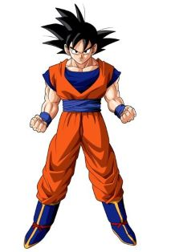

Actors in the Show
- 
Sean Schemmel/Goku
Goku is the main protagonist in Dragon Ball Z. He is part of the Saiyan race and was sent to Earth as an infant. As he grew up, he becames the Earth's strongest fighter.Goku is the main protector of Earth who battles any evil that threatens the planet He enjoys the thrill of fighting and is always training to increase his strength.
-
Christopher Sabat/Vegeta
Vegeta is the prince of the extinct Saiyan race. He is also very proud, arrogant, and selfish. At the beginning of the show,we see him as a ruthless killer who shows no mercy. As the show progresses, his character goes through a huge development as he becomes a herolater on. Goku is his rival and it is his life mission to surpass him in strength.

Christopher Sabat/Piccolo
Piccolo is a member of the namekian race. He is a close ally of Goku, w who at one time was his biggest enemy. He is a powerfulwarrior who spends most of his time training or meditating. He is an efficient fighter who gets the job done quickly. He is very stern and almost never smiles. Throughout the show , Piccolo develops a close relationship with Goku's son Gohan.
-
Saffron Henderson/Gohan
Gohan is the son of Goku. He is half human and half saiyan. Gohan does not the desire to fight like his father does. Instead he dreams of becoming a great scholar. As a youth he spends most of his time fighting. When his loved ones are in danger he will fight with the Z-fighters to protect Earth. Throughout the show, we see that Gohan has enourmous potential to become stronger than his father. He just does not have the desire for battle.
-
Chris Cason/Tien
Tien is first an enemy of Goku. He then becomes one of his good friends. He fights with the Z-fighters to protect the Earth against evil. He is a very honorable warrior who often dies trying to protect his friends. As a disciplined martial artist, he spends most of his time training.
Sonny Strait/Krillin
Krillin is Goku's best friend. He is noticeably short and bald. He is also part of the z-fighters. He is a very brave and well-mannered fighter. During battle, he is mostly overpowered by enemies. Because of this he retires from fighting and becomes a family man.
-
Linda Young/Frieza
Frieza is one of the main antagonist of the show. He is the reason why the Saiyan race is pretty much extinct. He destroys plantes and is very ruthless. He has killed many innocent people showing no mercy.